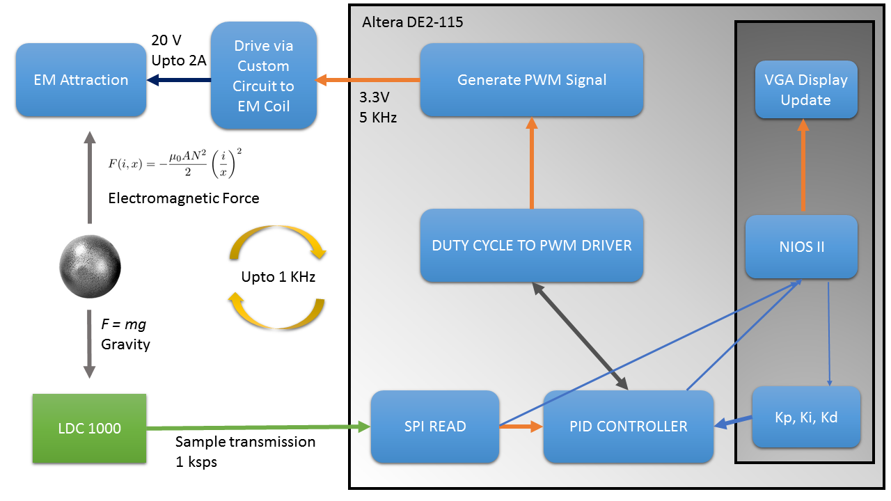
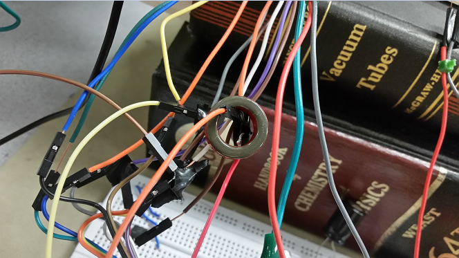
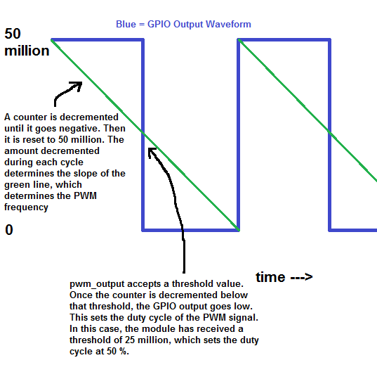
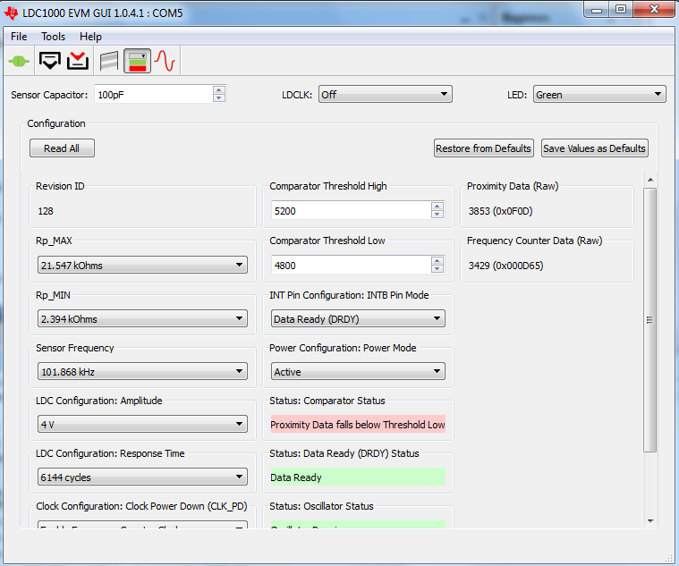
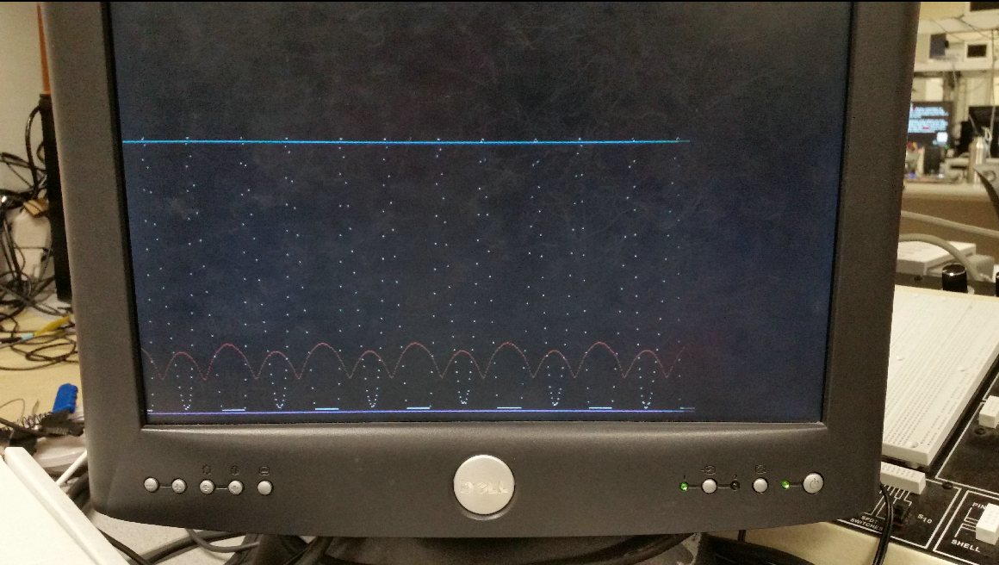
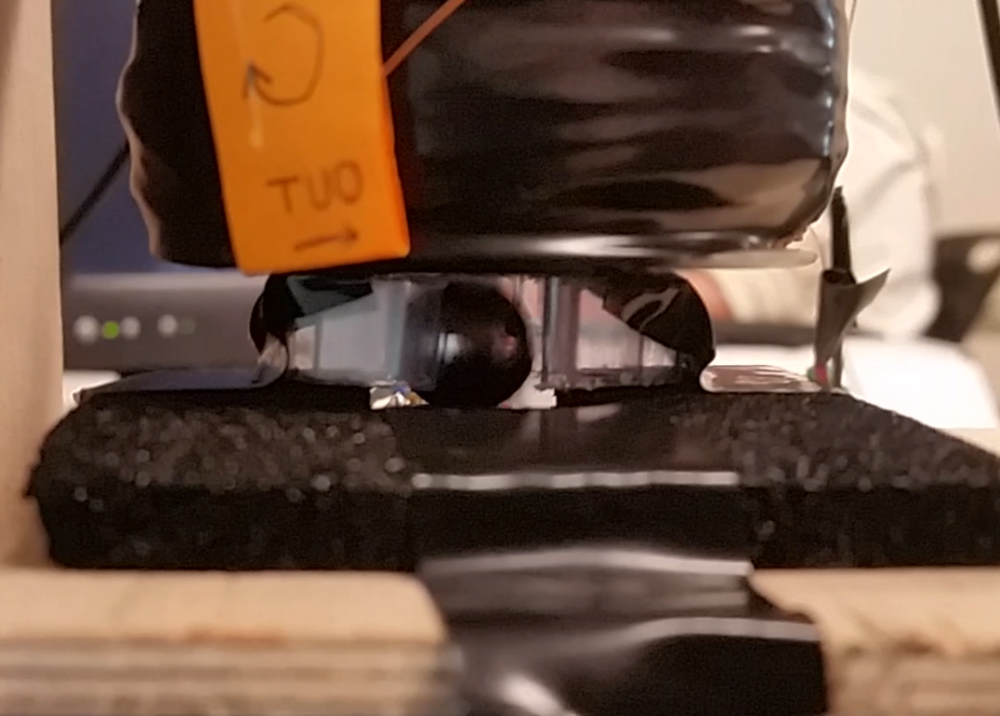
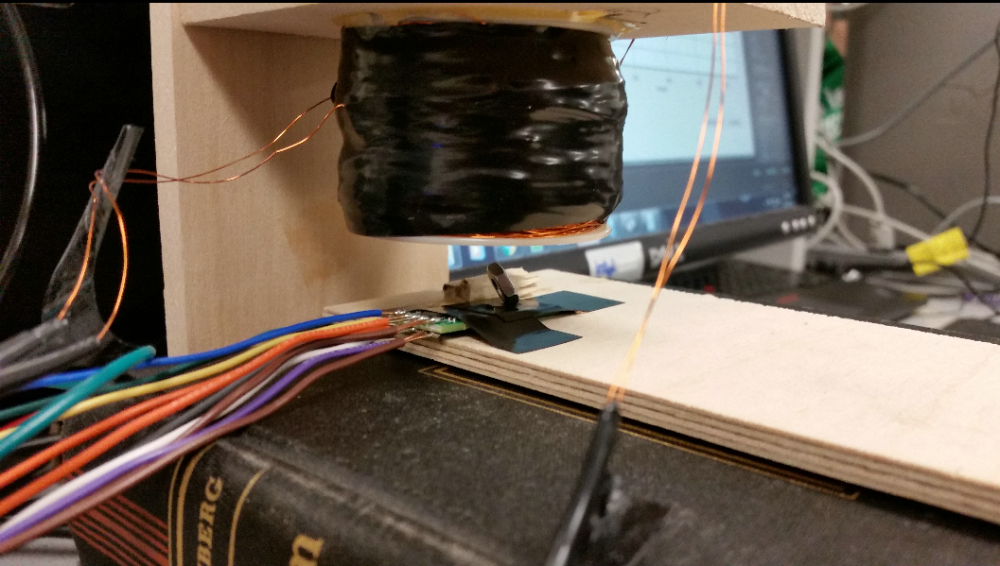
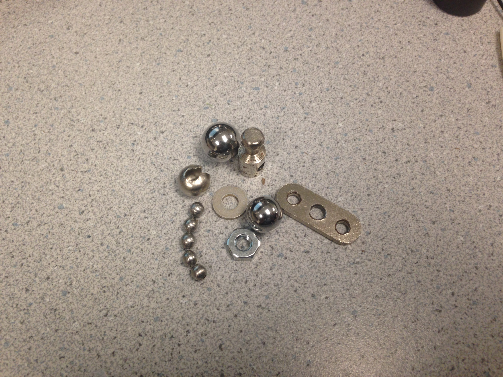
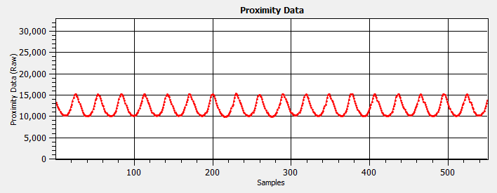
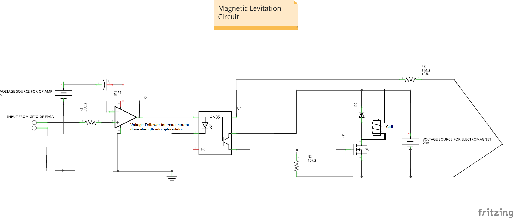

FPGA controlled Magnetic Levitation
Gautham Ponnu, Ryan Land, Nathan Spallone
Final project for ECE 5760 at Cornell University
Abstract
The objective of this project was to build a closed-loop control system on the Altera DE2-115 FPGA board to levitate a iron ball using magnetic levitation. We created the system using an electro magnet to pick up an iron ball and levitate it in the air between a horizontal resting spot and the metal core of the electromagnet. We used a TI LDC1000 EVM module as an inductive sensor to measure the distance the ball was hovering at.
Overview of the concept
The strength of an electromagnet is proportional to the amount of current flowing through its windings. When a steady DC current is passed through the coil, it produces a magnetic field. Placing a ferrite or other metal rod in the center of the coil will guide the magnetic field appropriately. Our system is designed with four main pieces:
- The magnetic coil and housing, which was attached to a wooden frame to remain stationary and solid throughout our debug phase.
- The coil driving circuit. This circuit takes a PWM output from an I/O pin and uses it to drive a N-Channel MOSFET, which essentially converts a PWM voltage signal from a pin to a PWM current signal through the magnetic coil.
- The LDC1000 inductive sensor from Texas Instruments. This device acts as a mini "metal detector" and tells us, albeit in a nonlinear fashion, the height of the ball. The output is nonlinear because it is measuring the presence of metal through inductance, not the direct elevation of the ball from the sensor.
- The DE2-115 FPGA which ties all of the systems together through hardware math. The FPGA reads the sensor, calculates the PWM duty cycle, and outputs the PWM voltage signal onto a GPIO pin going to the coil-driving circuit. It also performs PID calculations using constants defined by the user through serial input.
High Level Design
We discussed the concept of this project toward the end of the semester. Originally, some ideas put forth were as follows: a pivoting platform designed to solve a "metal ball in a wooden maze" puzzle, a water surface simulator, and an ambient TV lighting project. We eventually settled on the idea of a levitating ball project because we wanted to exploit the FPGA's ability of rapid calculation to achieve high performance on the PID calculations.
Background Math: We decided to implement the digital PID controller from Cornell University's ECE 4760. The concept of the PID controller is explained there. In short, several samples in a row are compared, and the PWM duty cycle output of the system is a function of constants multiplied by the proportional difference between desired and actual measurement, accumulation of that error over time, and the difference between the samples themselves. Each term can be multiplied by a different constant, and it is essential to pick the correct constants to have a stable system.
The structure of the system should go as follows:
System Flowchart
The hardware has an advantage in that it is the fastest way to do the sampling, filtering, and PID calculation all at the edge of a single sample clock coming out of the LDC1000 inductive sensor. It has a second advantage in that it can hold the PWM frequency steady while adjusting the PWM output duty cycle in real-time. Due to parallel processing, the PWM output can run unaffected and not delayed by heavy calculations, as would be the case on a general purpose microcontroller.
However, software comes in handy here as well. We used the built-in VGA controller in the NIOS II to display the proximity sensor and PWM output duty cycle values on a VGA screen. We used the same principles of drawing a scrolling line on the screen as was done in Lab 2. This way, we did not have to deal with writing individual bits and synchronize to a VGA clock in hardware. This helped our code look a little less messy as well. Another advantage of the NIOS II is that it let us easily change the PID constants on the fly; otherwise, we would have had to hard-code the constants into hardware and wait 5 minutes for it to compile to see if the constants we chose were any better than before.
We used SPI to read in the values from the inductive sensor. We did this in a "rigged" way. We ordered the LDC1000 Evaluation Module and ran the included software on the PCs in the lab. There were lots of pins on the LDC1000 and a ton of default registers to configure. Instead of having to start everything from scratch, we decided that we would just tap off the existing SPI transaction occuring on the Evaluation Module between the LDC1000 and its microcontroller, and just "sniff" the proximity values incoming from the LDC1000. This way, we could use fewer I/Os and have much less headache in designing our proximity reader. Fortunately, the TI Evaluation Module had lots of test points for us to tap off into the FPGA I/Os.
The function of the inductive sensor itself is the intellectual property of Texas Instruments.
Program/Hardware Design
Our Verilog code listing can be found HERE.
Our Nios II code listing can be found HERE.
The NIOS took in two inputs from the hardware. These are called x1_output and x2_output for legacy reasons, but in this lab, they are actually the modified proximity output (to be explained later) and the PWM duty cycle output. The NIOS provides three inputs into the hardware. These three inputs are the three PID constants.
The top level contains two custom modules: "Spi_controller" and "pwm_output." Spi_controller performs three main tasks:
- It reads the SDO (serial data output from LDC1000) lines into a register on the negative clock edge of every SCK (serial clock). Then, on every positive edge of CS (chip select), it knows that the LDC1000 is finished sending its data, and it latches the proximity value that was read to an internal register. The SPI reader reads every value of SDA during an SCK low pulse even if no data is transmitted. However, we examined the signal and configured the LDC1000 so that the only SPI transactions that ever occur are the transmissions of the proximity data to the MSP430 onboard the Evaluation Module.
- It median-filters the read values over the past three samples. We had issues with noise early on in the project, and so we desired to filter out any spurious lone noise spikes in the proximity reading by implementing a median filter to the past three samples. This "modified proximity output" mentioned earlier is used in the PID calculation, and is ultimately the value that is output to the NIOS for us to view and debug.
- It runs the PID calculation using the latest median-filtered sample.
The image below is a quirky solution to an unusual problem. We noticed that, when we tried to plug two of the three SPI inputs (it did not matter which two) into the GPIOs of the FPGA (it also did not matter where the GPIOs were assigned), we suddenly began to see tons of noise on the proximity output - as if the output had become totally randomized and uncorrelated. We tried bending the wires, hoping it was a connection problem, and the problem would usually go away. However, we eventually figured out that it was EMI noise that was messing up the SCK line. We noticed that this issue disappeared when we laid a pair of metal tweezers on the SCK wire. Eventually, we grabbed a ferrite bead and ran the wire through it, completely elimiating the problem. We liked the solution, so we put a ring on it.
EM interference solved by strategic placement of Ferrite Core
The pwm_out module controls the GPIO that outputs the PWM voltage signal. It uses a counter that counts down from 50 million. Once it reaches zero, it resets to 50 million and sets the GPIO high again. The amount of decrement per clock cycle (50MHz) determines the PWM frequency. The GPIO is set low once the counter reaches a certain threshold. This threshold sets the duty cycle. The image below explains the module's purpose more intuitively.
Logic behind our PWM
Circuit
See the Appendix for the circuit schematic.
First, the PWMed GPIO goes into the input of an LM358 voltage follower op-amp circuit. This op-amp is powered from the FPGA's 5V because the op-amp can only output a maximum voltage of its supply value minus 1. So therefore we had to apply 5V even though we are using a 3.3V signal. The purpose of the voltage follower was to "buff" the FPGA's GPIO because the GPIO has very little current strength - not enough to power the diode in the optoisolator.
The output of the voltage follower goes through the diode of the 4N35 optoisolator and through a 300 ohm current-limiting resistor. At the other side of the optoisolator is the n-channel MOSFET. This is a high current MOSFET that is turned on and off by the strong driving current of the BJT in the optoisolator. The resistors on the optoisolator are designed for constant-current output and to operate optimally at a frequency around 1 kHz.
The coil is connected to a higher voltage power supply and is only grounded when the FET is on. When the FET turns off, the inductive nature of the coil may cause a voltage spike which could damage other components connected to it. Because of this, there is a clamp diode placed in parallel with the coil that will absorb the current before the voltage spike can become too high.
The NIOS II code doesn't do much other than to send the constants into the hardware via user serial input, then constantly display the measurement results on the screen in a continuous loop.
One of the trickiest things to write was the SPI controller - as simple as it seems in the code. This is because we originally had to contend with the fact that the LDC1000 was alternating is transactions: it would send the proximity data, then an inductance value, then proximity again, etc. We did not have any way of distinguishing these two transactions because we did not have a tap on the SDI (serial data in from MCU on Evalulation Module) that would have helped us tell which register the MCU was asking data from. We tried implementing an SDI tap but to no success. For a while, we exploited the fact that the proximity value seemed to always be numerically larger than 4000, and inductance value less, so we put an x>4000 filter on the SPI reader so that it would reject any frequency values. Eventually though, we figured out a way on the Evaluation Module software to stop the inductance value transactions from occurring in the first place. Then we were able to remove that filter.
Configuration Window of LDC1000
Another issues was that the ball moved a lot laterally. The sensor was sensitive to changes in both axes. So although the ball would just be the same height, if it moved a little on the x-axis we would still get different values. This wreaked havoc on setting the set-point of the value to the system. We realized we had to constrain the motion of the ball to one axis.

Unconstrained ball moving laterally and escaping the magnetic field
So, we designed a red-neck cladding tube that would allow free y-axis motion, but prevent excessive x-axis displacement. This greatly improved the system although it destroyed it aesthetically. In hindsight, a more finely machined glass/transparent tube would have been ideal. Here's the demo of the cladding.

Container Design and Validation
Things we tried that did not work
Well, the system itself does not work as expected. We used a PID module designed to control the speed of a computer fan because that was the easiest-to-implement PID module we had lying around. However, this system has nonlinearities all over the place - from the strength of the coil vs PWM to the sensitivity of the inductive sensor coil to horizontal wiggling of the iron ball. We tried tuning the PIDs to not much avail - however, we were able to get the ball to "dance" along the electrical tape that was next to the inductive sensor.
Results of the design
The below image shows the control system in action. The PID controller is trying to keep the ball at a level right about the center of the oscillations of the red line. The red line represents the median-filtered proximity output (nonlinear representation of ball height) and the white plot represents the PWM output duty cycle. It is clear that, when the ball is resting (red line goes low), that the PWM duty cycle sharply increases to try to pull the ball back up to its desired setpoint. The horizontal blue lines are just border markers for the output graphs.
Graph Output from NIOS
The below image is a still from a video where the ball was oscillating up and down. In this frame, the ball was floating in between the sensor and the coil bolt, which is what we hoped to happen in steady-state. This is difficult to see because of the fixture around the ball below the coil. That fixture was designed to restrict horizontal motion of the ball and avoid unwanted sensor effects of the ball drifting sideways.
The ball moving so fast, that imaging technology is unable to capture it
This hex nut is leaning like it was in Smooth Criminal, showing the difficulties we faced in levitating non-uniform shapes.
Non-spherical objects had non-linear reactions to the levitation
Below is a picture of the different things that we tried until we finally were given a couple of 'pachinko' balls that were the perfect fit for the project
Different metal items used as object of interest
The speed of execution of the PID system is equal to the sample frequency coming out of the LDC1000. At the high edge of every chip-select (CS) pulse, all median filtering and PID calculation steps are run. This frequency is usually around 300 Hz, but can be changed to several kHz via the Texas Instruments LDC1000 GUI.
Although the sensor in itself is capable of going upto 75 Ksps, the USB GUI Architecture implemented limits this to 1 KHz. If we had enough time, we could have removed the USB dependency and driven the sensor board at maximum sampling rate.
The accuracy was less than we hoped. While we can see the results of the control system in action. the motion of the ball was simply too fast for the current-PWMed coil to keep steady. In addition, the nonlinearities of the system didn't help much.
We enforced safety by clamping the PID output at the maximum and minimum PWM values of 0 and 32768. That way, we don't get unwatned oscillatory behavior on the coil. We also had to keep in mind the physical safety of the experimenters. We used a bench power supply with a max of 25V and a max current output of 0.5 A. It turns out that this was nearly perfect for our design. Our coil is really two coils in parallel, and the total resistance is about 35 ohms. One more safety feature is the isolation of the GPIO using the op amp. We did not want to draw too much current, so we used the op amp isolation to keep the GPIO from being essentially grounded.
We didn't cause any known interference with other designs, but we probably caused it with our own, given the ferrite bead issue mentioned earlier.
The design is marginally usable. The hardest part is trying to align the depression in the inductive sensor coil with the bolt in the electromagnetic coil so that the ball does not wobble all over the place.
Conclusions
This is the initial trial of the first well-tuned Magnetic Levitation Output of lifting a ball.
This is the tuned Magnetic Levitation Output of lifting a ball.
Results and Expectations
We were able to achieve about 2-3 mm hovering ball smoothly rotating around in frictionless air. It was a joy to behold. Although, the final outcome was not aethestic on the eye, we did achieve what we initially wished to accomplish.
Our final setpoint and achieved real-time process variable are below:
Final Setpoint
If we had to redo this project, we would probably use a different sensor. In the papers we read, the most common sensor was a light sensor arranged along the vertical axis. This way, the ball's horizontal wobbling does not have much, if any, effect on the sensor measurement. We would also try to linearize any sensor we use so that our PID controller would be easier to tune. We might have also chosen a more appropriate PID algorithm as was done in some of the papers we reviewed on this topic.
We did not use any code in the public domain. We did a bit of reverse-engineering on the TI Evaluation Module, but only if tapping off some existing SPI transactions is considered "reverse engineering." We did not use any NDA devices. Patent opportunities for this project may be limited unless exotic sensors (like this one) are being used.Applicable Standards
We used SPI to communicate with the LDC1000. We used the Texas Instruments LDC1000 GUI for configuration.Intellectual Property Considerations
We used the Nios II processor, intellectual property of Altera.Legal Considerations
We did not use intentional radiators for this project. However, if it were to be commercialized, we would need to get FCC approval for unintentional radiators.Appendix
Commented Code
Our Verilog code listing can be found HERE.
Our Nios II code listing can be found HERE.
Schematics
PWM voltage to current schematic
Specific Tasks from Each Member
Ryan Land
- Component Selection
- Analog Circuit Design
- PCB Wiring and Soldering, Coil assembly
- Verilog code, including SPI transactions, NIOS II and PID control
Gautham Ponnu
- Component Selection
- Analog Circuit Design and Debug
- PCB Wiring and Soldering, Coil assembly
- Median Filter and PID algorithm, NIOS II PID constant input
- PID tuning for best floaty performance
Nathan Spallone
- Soldering and debug
- SPI transaction code testing on NIOS
- Equipment Purchase
References
Data Sheets
TI 4N35 Datasheet TI LM358 Datasheet TI LDC1000 Datasheet TI LDC1000 Evaluation Module User's Guide International Rectifier IRL540N N-Channel MOSFET Datasheet Altera DE2-115 User's GuideVendor Sites
Texas Instruments Altera International RectifierCode/Designs Borrowed from Others
FET Driving Circuit from ECE 4760Background Sites
Qiaohong Guo, Desheng Li, Zhiyuan Lu, Wei Wang, and Lezhi Ye: "Research on a Maglev Ball Control System Based on DSP2812." Beijing University of Technology.
Kevin Craig: "Magnetic Levitation System." Rensselaer Polytechnic Institute
Acknowledgements
We would like to thank Prof.Bruce Land and his teaching staff for their support and encouragement throughout the project. We would also like to thank Prof.Bruces' Dad for designing a really good power supply that has stood the test of time and supplied our flimsy electromagnet with more current than any of the modern RPS's in the lab could. We would also like to thank Prof.Joe Skovira for genrously lending us his precious pachinko machine balls to trial. We had lot of fun and learnt a lot about practical control systems in this project of ours.